Photos :
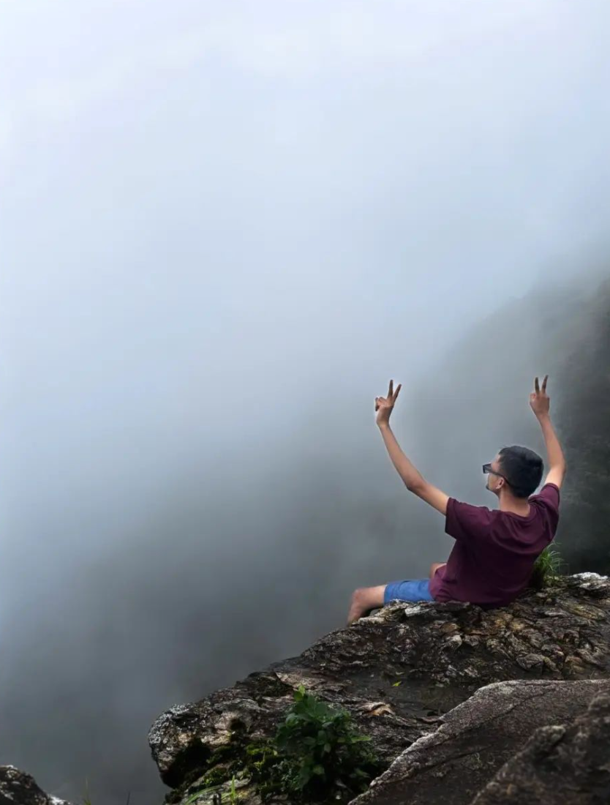
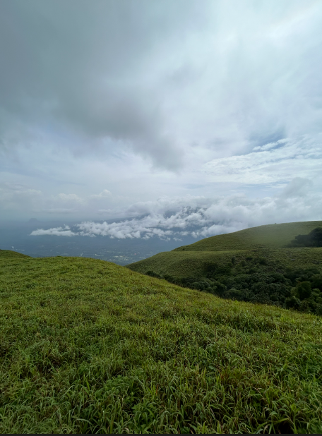
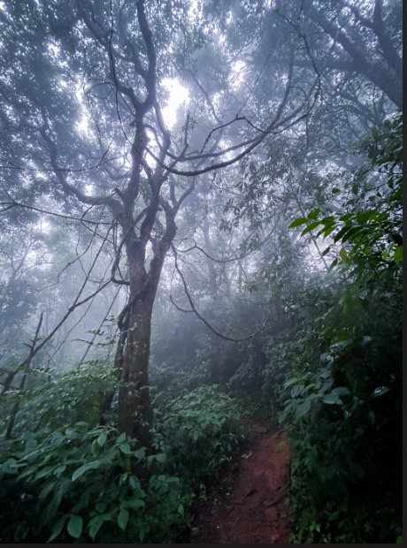
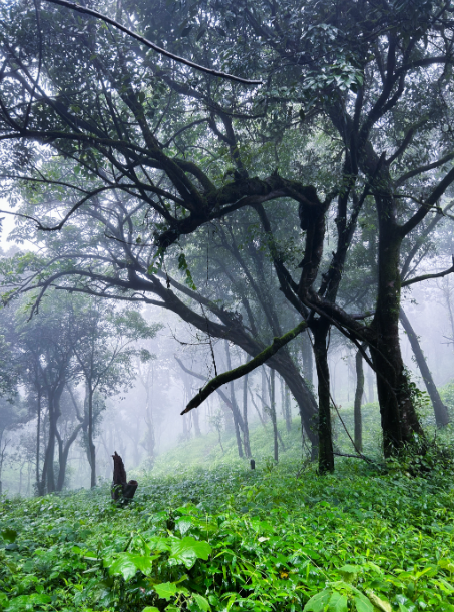
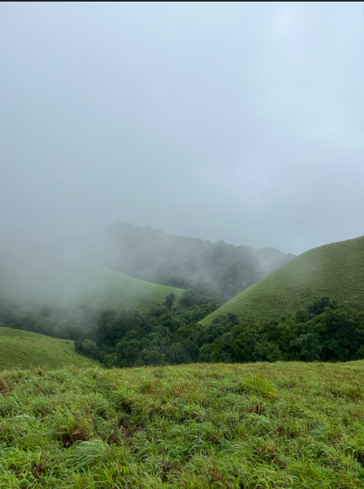
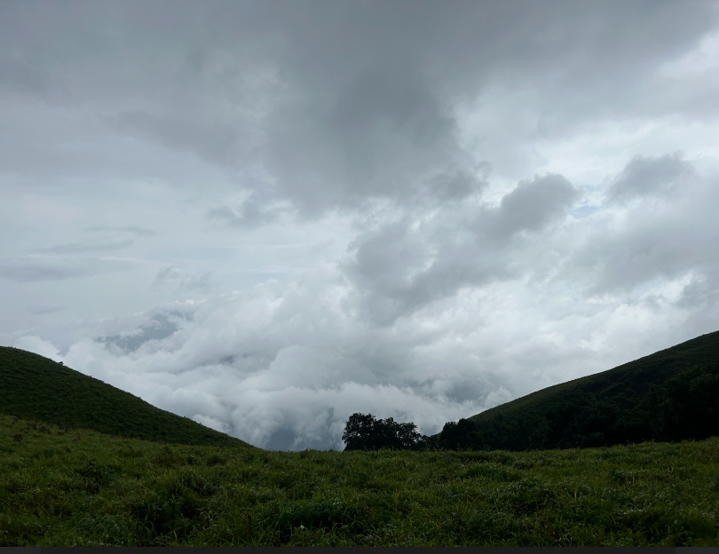
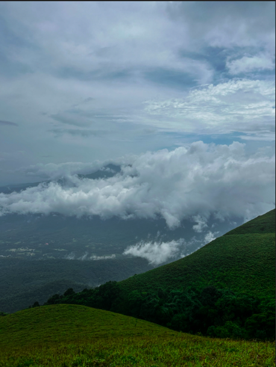
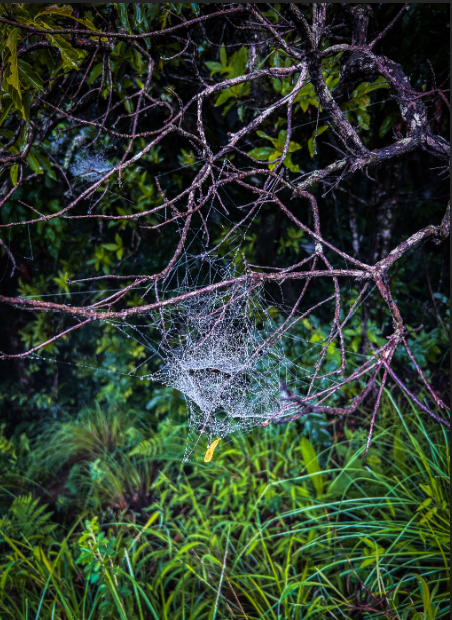
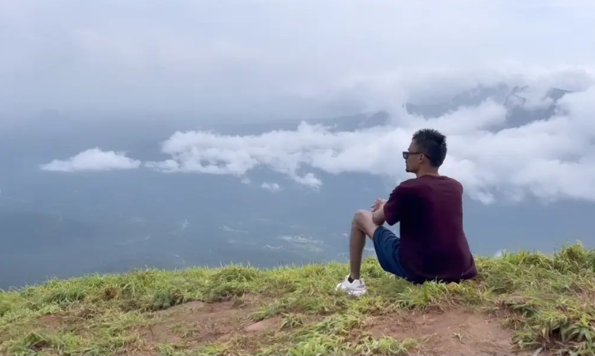
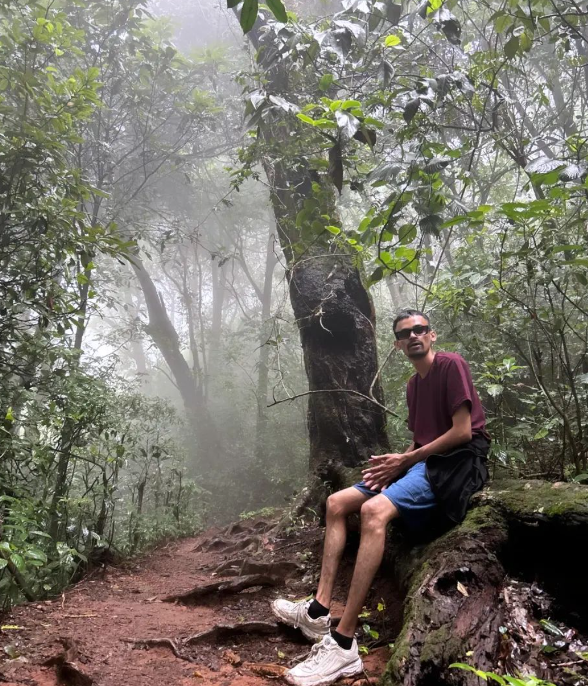
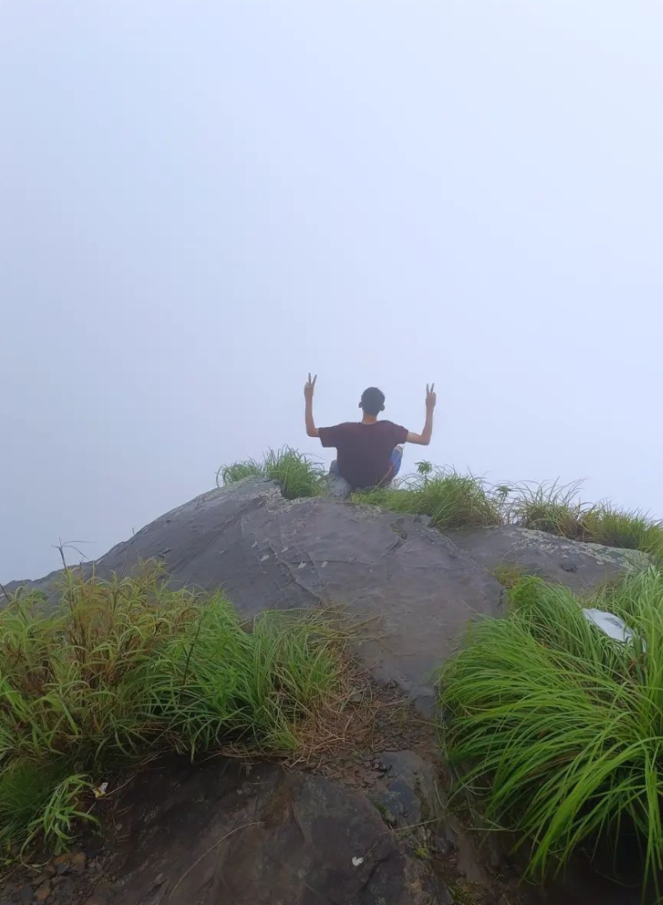
Travel Tips :
Best time to visit:
Plan your trip between October and February to enjoy pleasant weather and lush greenery.
Clothing and gear pack:
Pack light, comfortable clothing suitable for trekking, avoid more plastic covers,carry sanitizer or vasline to get rid of leach, Sturdy footwear is essential for exploring the hilly terrain.
Accommodation:
Book accommodations in advance, especially during peak seasons, to ensure availability. Consider staying in local lodges or resorts for an immersive experience.
Wildlife Etiquette:
Respect wildlife and maintain a safe distance when encountering animals. Follow sanctuary guidelines to preserve the natural habitat.
local cuisine:
Explore local eateries to savor authentic Karnataka cuisine. Don’t miss trying traditional dishes that reflect the region’s cultural heritage.
Conclusion :
Our adventure to Bandeje Falls was truly unforgettable. From the challenging trek through the rain and fog to the stunning beauty of the waterfall, it was a perfect day with friends. We laughed, explored, and created memories we will cherish forever. It was a great escape into nature and a reminder of the joy of adventure. We left with happy hearts and a desire for more trips together.